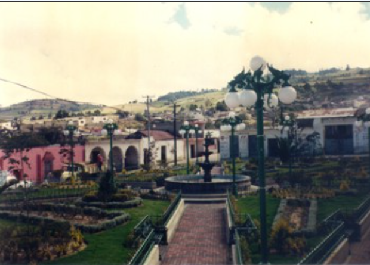
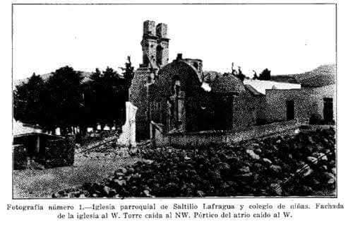

Descubre la belleza y cultura de Lafragua
Lafragua es un municipio ubicado en la Sierra Norte de Puebla, conocido por sus impresionantes paisajes naturales, su rica historia y sus tradiciones culturales. Su cabecera municipal es el pueblo de Saltillo, que no debe confundirse con la ciudad de Saltillo en Coahuila.
Imagen representativa de la Parroquia de Lafragua.
HISTÓRICA PARROQUIAL DE SAN JOSE SALTILLO LAFRAGUA El municipio de lafragua se encuentra en la parte centro-este del estado de Puebla; pertenece a la región de Chalchicomula de Sesma (Serdán) y dista a 120 kilómetros de la capital, aproximadamente, a dos horas y media. Sus límites son los siguientes: al norte con el estado de Veracruz, al sur con tlachichuca, al oeste con Guadalupe Victoria y al este, con Chilchotla. En su fundación intervinieron grupos nahuas y totonacos; desafortunadamente, el rastro de esos grupos se extravió con los años. A finales del siglo XIX, por decreto del 28 de febrero, el pueblo de Saltillo y las rancherías de Cuercuello, Maravillas, Quechulac, Huecapan, Apizaco, Canoitas, tlanalapa, Pocitos y Agua de la Mina formarán una nueva municipalidad, denominada lafragua, en honor del jurisconsulto poblano, José María lafragua. En la segunda década del siglo XX el municipio padece una grave destrucción, a causa de un sismo. Como consecuencia natural, gran parte de los habitantes se trasladan a la Hacienda de Huecapan, a la que denominarán nuevo Saltillo. Ocho años más tarde, por decreto del 22 de junio, con el pueblo de nuevo Saltillo, las rancherías de Maravillas, Canoitas, Apizaquito y Quechulac, y las haciendas de Huecapan tolteca, y el rancho de Santa Ana, se erige el municipio de Guadalupe Victoria.
La parroquia de San José, Saltillo lafragua, forma parte de la zona pastoral oriente, y pertenece al decanato de Guadalupe Victoria. no se sabe con exactitud cuándo fue construida la parroquia, sin embargo, de acuerdo con datos hallados en el archivo, se sabe de las modificaciones que le efectuaron. El fundador de la parroquia fue el cura interino, don José María Vera, quien tomó posesión el 28 de marzo de 1875. Su administración fue muy corta, pues duró tan sólo ocho meses. A los 12 días llegó a lafragua el segundo sacerdote, don José María Ignacio Hernández, quien permaneció hasta el 29 de mayo de 1877. Dos meses más tarde, el cura don feliciano Ramírez recibió la parroquia y la entregó el 22 de enero de 1878. A los cinco días de la partida del párroco Ramírez, llegó a administrar la feligresía de Saltillo lafragua, el cura don José Gabriel González Hernández. Durante sus tres años de estancia, bajo suguía y al apoyo desinteresado del pueblo, el 16 de agosto de 1878 se concluyó el actual edificio que sirve para la casa cural. El cura González Hernández permaneció en la parroquia hasta el 28 de febrero de 1881. En ese mismo año, durante un lapso breve de cinco meses, estuvo el cura don José de Jesús torres Espinosa. El párroco, don Darío Julio Caballero, se hizo cargo el 25 de julio y lo entregó el 2 de febrero de 1882. A los ocho días fue designado, como nuevo párroco, don Ambrosio Hernández, quien se encargó de la construcción de la primera escuela en Saltillo lafragua y de la compra de un órgano, muy poco utilizado, por cierto. El 15 de junio de 1884 abandonó el curato. En esa misma fecha el cura don nicolás Sabino Zabaleta recibió del propio don Ambrosio, la administración de la feligresía. Aunque fue breve la estancia de don nicolás, logró cambios en la tarima del templo, mandó fabricar ladrillos para la parroquia, y se adquirieron imágenes de Jesús nazareno, la Magdalena y de San Ramón.
Imagen representativa de la parroquia de Lafragua.
Cabe mencionar que el 14 de noviembre 1911, el sacerdote don feliciano Díaz Guzmán solicitó al arzobispado licencia para restaurar y ampliar la parroquia. licencia que le fue otorgada dos días más tarde, pero con ciertas condicionantes, entre otras, que las obras se realizaran bajo su inspección, pues no se contaba con un director técnico, y que llevara un libro de entradas y salidas. Al formular el diagnóstico del archivo, observamos que la documentación, sobre todo los libros de Bautismo, Matrimonios y Defunciones, estaban en buenas condiciones, con excepción de dos libros (Bautismos 1930, 1935) que se encontraban en dos módulos, de estantería metálica. El resto de la documentación se hallaba en la bodega, junto con varias cajas de cartón, huacales y bultos de maíz. Y en un baúl de madera, cubierto por sotanas viejas, hallamos esta documentación, de la que separamos Circulares, Correspondencia e informaciones Matrimoniales; todo de varios años. Gran parte de ella, sobre todo la correspondiente a los años sesenta, estaba roída por ratones. la documentación que no estaba tan expuesta, se logró rescatar. El acervo data de 1875 a 1950 y quedó ubicada en 21 cajas archivadoras, AG-12, que contienen dos series secciones: Sacramental y Disciplinar, ambas con sus respectivas series. En el acervo se identifico la serie de Statu Animarum; constituida sólo por un libro que se encuentra en buenas condiciones de conservación. En su portada tiene una etiqueta, en la que se lee la leyenda: “libro nº 1 de Statu Animarum o Matricula parroquial. 1912”. En la primer página, se establece que el libro se inicio el 1 de enero de 1912, por el presbítero Serafín María Armora. Por obligación el párroco debe conocer a los miembros que conforman su parroquia, y conformar con toda diligencia dicho libro. El libro está separado de acuerdo a la importancia de las comunidades: Saltillo lafragua, Ranchería de Apizaco, Ranchería de Canoitas, Ranchería de Huecapan, Ranchería de Quechulac, Ranchería de Pocitos, Ranchería de tlanalapa, Ranchería Agua de la Mina. la informaciones esta dividida en celdas con los siguientes datos: número de familia; número de personas; nombres; edad; sexo; estado y observaciones. En todo el libro, el apartado de observaciones es dejado en blanco; en el rubro de estado, el párroco estableció cuatro categorías: casado (a), célibe, niño (a), amancebado y viudo. Como se observa la numeración es consecutiva, le estableció un número a cada familia, que siempre parte del padre y llega al miembro más pequeño de la familia, sin importar su sexo. En general estos son los elementos que encontramos en el libro de Statu Animarum o matricula parroquial.